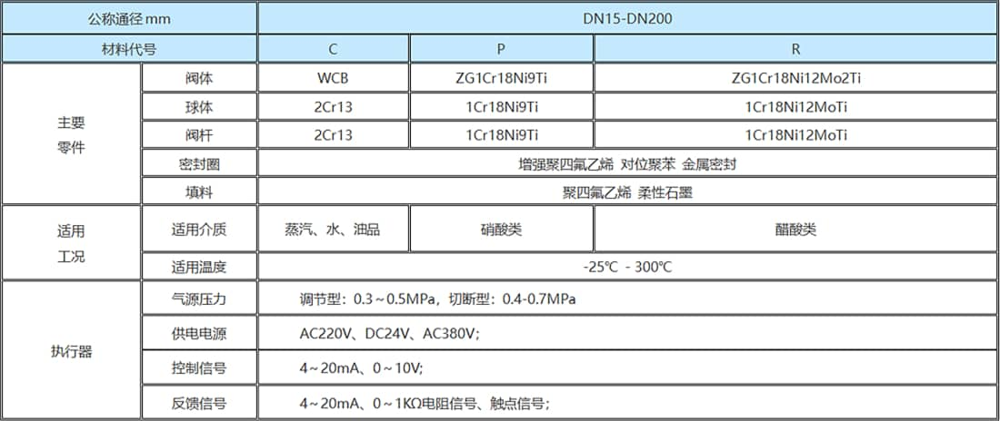
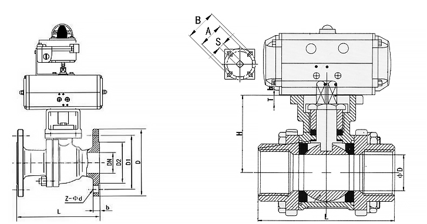

ZSO（ZAJO）型气动（电动）切断/调节球阀，是一种转角90°的旋转类球阀，阀体结构有安装软密封阀座与全金属阀座两种，分别用于常温（-25℃～180℃）及高温（-25℃～300℃）场合，阀体密封性能优良，流通能力大，流阻系数小，结构简单、维修方便、使用寿命长，阀体通道和连接管径相等并成一直径，介质几乎可以毫无损失的流过。产品通常用于密封要求严格的场合，除控制气体、液体、蒸汽介质外，还适宜控制污水和含有纤维性杂质的介质，广泛用于石油、化工、冶金、轻工、造纸、电站、制冷等工作领域。
1、流体阻力小、球阀是所有阀类中流体阻力最小的一种，即使是缩径球阀，其流体阻力也相当小。
2、止推轴承减小阀杆摩擦力矩，可使阀杆长期操作平衡灵活。
3、阀座密封性能好，采用聚四氟乙烯等材料制成的密封圈，结构易于密封，而且球阀的密封能力随着介质压力的增大而增大。
4、阀杆密封可靠，由于阀杆只作旋转运动而不做升降运动，阀杆的填料密封不易破坏，且密封能力随着介质的压力增设而增大。
5、由于聚四氟乙烯等材料具有良好的自润滑性，与球体的摩擦损失小，帮球阀的使用寿命长。
6、下装式阀杆和阀杆头部凸阶防止阀杆喷出，如火灾造成阀杆密封破坏，凸阶与阀体间还可形成金属接触，确保阀杆密封。

